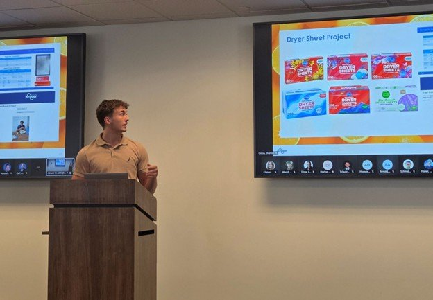

Professional experience outside the classroom
From enterprise sourcing, product management, startup project lead, and consulting, taken on alongside a full course load at UC.
AMEND Consulting
Aug 2026 – PresentAnalyst · Cincinnati, Ohio
- Support ERP data migration for a client: mapping records from the legacy system to the new platform, owning specific migration files through cutover, and validating column structures against the old ERP database using SQL queries to ensure a clean transfer.
- Sit in on process-documentation calls with the client's CFO and Corporate Controller to capture their AP and AR workflows, then write detailed, process-specific SOPs for the client team.
- Participate in AMEND's Data & Technology development track, building skills in data science practices, machine learning applications, and workflow automation via n8n alongside client delivery work.
RentScore
Aug 2026 – PresentProject Lead, Campus Engagement Team · University of Cincinnati · app.rentscorehq.com
- Lead a team of 4 running user acquisition campaigns across the University of Cincinnati campus, getting clubs, Greek life chapters, and other organizations to sign up members, with groups earning funds for their organization at sign-up milestones.
- Own outreach and relationship-building with club and chapter leadership, campaign setup (QR codes, tracking), and the marketing budget behind each campaign.
Kroger Technology & Digital
May 2026 – Aug 2026Product Management Intern · Cincinnati, Ohio
- Built and deployed an AI-enabled product discovery and delivery workflow system across 23 NGPOS product management teams, consolidating a legacy discovery tracking system into a single source of truth across Jira, Confluence, and Microsoft Teams.
- Automated manual discovery documentation, feature tracking, and stakeholder alignment via Jira Automation, Power Automate, and Teams Webhooks.
- Independently scoped and built a Confluence-based AI bug triage agent: a structured knowledge base of 100+ historical bugs, with automated similarity matching and intelligent developer routing based on team ownership.
- Had the agent independently discovered and adopted by a separate KTD team searching for a solution to a parallel problem, then aligned with the KTD tech lead on a roadmap to scale it beyond NGPOS.
Kroger Enterprise Sourcing
Jan 2025 – May 2026Three rotations: Rigid/Semi-Rigid Packaging → Kroger Label Products (Health, Baby, and Beauty) → CPI Beverage
- Drove end-to-end analysis for a $25M+ RFP on carbonated soft drinks and water packaging, building competitive supplier evaluations that identified $900K in projected annual savings and surfaced tariff and vendor-quality supply chain risks.
- Identified up to 60% overspending on identical SKUs across the Roundy's division by engineering a price variance analysis auditing distributor markup against direct-to-vendor sourcing models.
- Led the end-to-end RFP process for a $3M+ dryer sheet category, conducting Design to Value benchmarking against national brands and aligning Merchandising and Sourcing stakeholders through final award recommendation.
- Led the end-to-end Round 1 process for a $3.1M dryer sheet category RFP, narrowing 9 suppliers to 2 finalists. The recommendation carried forward to a ~4% price reduction and ~$100K in final savings without onboarding a new vendor.

CJI Inc.
May 2024 – Aug 2024Accounts Payable Intern · Macedonia, Ohio
Completed through a high school program to get an early start on real-world professional experience before college even began.
- Recorded and tracked company expenditures averaging $95K per month using Foundations accounting software, maintaining accurate vendor and project-level financial records supporting management review and audit readiness.
On campus
Engineers Without Borders UC
Vice President of Operations · Dec 2025 – PresentDelta Tau Kappa Interdisciplinary Honor Society
Internal Vice President · May 2025 – PresentUC Darts Club
Secretary · May 2026 – PresentUC Pickleball Club
Member · Jan 2025 – PresentToolkit
Product & Discovery
Jira, Confluence, product discovery, stakeholder interviews, workflow mapping, PRD development, roadmap support, automation scoping
Automation & AI
Jira Automation, Power Automate, Copilot Studio, GenAI Studio, Teams Webhooks
Data & Analytics
SQL, Excel, forecasting, Power BI, Circana, Stratum, DemandTec, Market 6, KCMS
Business & Finance
RFP management, sourcing strategy, Design to Value, cost savings analysis, price variance analysis, executive reporting